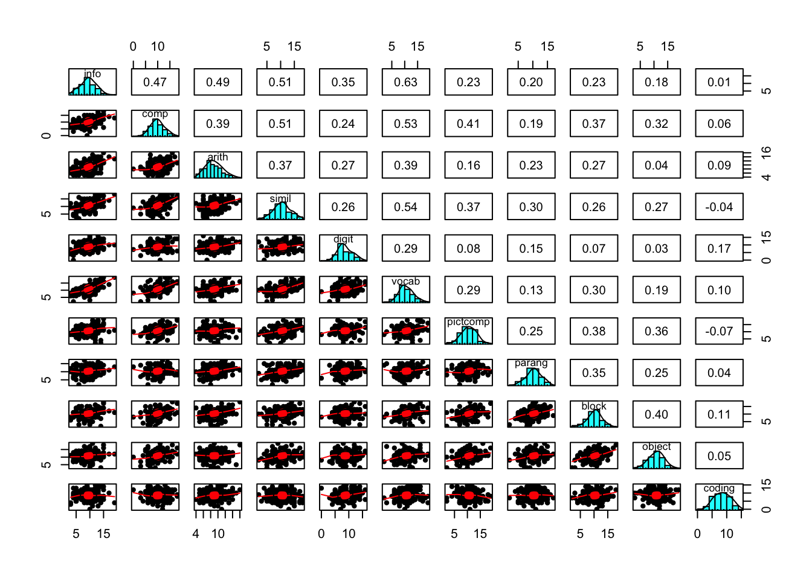

6 Confirmatory Factor Analysis
In the last chapter we discussed exploratory factor analysis (EFA). In this chapter I will walk you through an example of a confirmatory factor analysis(CFA). Along the way we will discuss the some advantages and disadvantages to each. To help ground the concepts covered, I will start with an example research project. This one is also based on the example data in the HEMP book, and is similar to many examples using CFA. This example used data from an IQ battery, the WISC-R. To get the data load the hemp package, then load the wiscsem data frame. Then take a look at the data:
library(hemp)
data(wiscsem)
str(wiscsem)'data.frame': 175 obs. of 12 variables:
$ agemate : num 3 3 3 3 2 3 3 2 3 3 ...
$ info : num 8 9 13 8 10 11 6 7 10 9 ...
$ comp : num 7 6 18 11 3 7 13 10 8 10 ...
$ arith : num 13 8 11 6 8 15 7 10 8 8 ...
$ simil : num 9 7 16 12 9 12 8 15 14 11 ...
$ vocab : num 12 11 15 9 12 10 11 10 9 9 ...
$ digit : num 9 12 6 7 9 12 6 7 9 11 ...
$ pictcomp: num 6 6 18 13 7 6 14 8 10 10 ...
$ parang : num 11 8 8 4 7 12 9 14 11 12 ...
$ block : num 12 7 11 7 11 10 14 11 10 9 ...
$ object : num 7 12 12 12 4 5 14 10 9 13 ...
$ coding : num 9 14 9 11 10 10 10 12 6 13 ...
- attr(*, "variable.labels")= Named chr [1:13] "" "" "Information" "Comprehension" ...
..- attr(*, "names")= chr [1:13] "client" "agemate" "info" "comp" ...summary(wiscsem) agemate info comp arith simil
Min. :0.000 Min. : 3.000 Min. : 0 Min. : 4.0 Min. : 2.00
1st Qu.:1.000 1st Qu.: 8.000 1st Qu.: 8 1st Qu.: 7.0 1st Qu.: 9.00
Median :2.000 Median :10.000 Median :10 Median : 9.0 Median :11.00
Mean :2.051 Mean : 9.497 Mean :10 Mean : 9.0 Mean :10.61
3rd Qu.:3.000 3rd Qu.:11.500 3rd Qu.:12 3rd Qu.:10.5 3rd Qu.:12.00
Max. :6.000 Max. :19.000 Max. :18 Max. :16.0 Max. :18.00
vocab digit pictcomp parang
Min. : 2.0 Min. : 0.000 Min. : 2.00 Min. : 2.00
1st Qu.: 9.0 1st Qu.: 7.000 1st Qu.: 9.00 1st Qu.: 9.00
Median :10.0 Median : 8.000 Median :11.00 Median :10.00
Mean :10.7 Mean : 8.731 Mean :10.68 Mean :10.37
3rd Qu.:12.0 3rd Qu.:11.000 3rd Qu.:13.00 3rd Qu.:12.00
Max. :19.0 Max. :16.000 Max. :19.00 Max. :17.00
block object coding
Min. : 2.00 Min. : 3.0 Min. : 0.000
1st Qu.: 9.00 1st Qu.: 9.0 1st Qu.: 6.000
Median :10.00 Median :11.0 Median : 9.000
Mean :10.31 Mean :10.9 Mean : 8.549
3rd Qu.:12.00 3rd Qu.:13.0 3rd Qu.:11.000
Max. :18.00 Max. :19.0 Max. :15.000 You should also look at the help information for this data set with ?wiscsem in the R console. Be sure to look at what each of the variables represents.
This example will use 11 items from the WISC-R that are thought to underlie two cognitive abilities, verbal and performance. The verbal scale is thought to rely on abilities captured by sub-tests assessing information processing, comprehension, arithmetic, similarities, vocabulary, and digit span. These map onto the following variable names in the wiscsem data: info, comp, arith, simil, vocab, and digit. The performance scale is thought to rely on abilities captured by sub-tests assessing picture completion, picture arrangement, block design, object assembly, and coding, which map onto the following variable names: pictcomp, parang, block, object, and coding.
Below, I create a vector of column names for the variables I wish to subset from the larger data set. Then I create a new data frame I call wisc_iq that consists of those variables. I will use this smaller data set to create plots and descriptive statistics for only these variables.
# Create a vector of variable names for iq model variables.
wisc_iq_vars <- c("info", "comp", "arith", "simil", "digit",
"vocab", "pictcomp", "parang", "block",
"object", "coding")
# Create a data frame with only the iq variables from wiscsem.
wisc_iq <- wiscsem[ , wisc_iq_vars]First, look at a plot of these variables.
pairs.panels(wisc_iq)
This plot suggests that the variables are consistent with coming from populations that are normally distributed, and there is not strong evidence of nonlinear relations between the variables. We can get some basic descriptive statistics of this data.
describe(wisc_iq, fast = TRUE) vars n mean sd min max range se
info 1 175 9.50 2.91 3 19 16 0.22
comp 2 175 10.00 2.97 0 18 18 0.22
arith 3 175 9.00 2.31 4 16 12 0.17
simil 4 175 10.61 3.18 2 18 16 0.24
digit 5 175 8.73 2.70 0 16 16 0.20
vocab 6 175 10.70 2.93 2 19 17 0.22
pictcomp 7 175 10.68 2.93 2 19 17 0.22
parang 8 175 10.37 2.66 2 17 15 0.20
block 9 175 10.31 2.71 2 18 16 0.20
object 10 175 10.90 2.84 3 19 16 0.21
coding 11 175 8.55 2.87 0 15 15 0.22Notice that the sub-test scores have similar ranges, means, and standard deviations. This is usually good for items used in a factor analysis. If these values were not similar, rescaling items might be useful.
If this were a real research project, I would spend much more time exploring the data to assess distributions, outliers, and look for data entry errors, among other things. But here I will skip most of that to focus on the factor analysis.
6.0.1 Goals of Factor Analysis
Recall that the goal of factor analysis is to determine the number of latent constructs that best explain the variance in a set of indicators. The indicators are the observed variables, while the latent variables are theoretical constructs we do not measure directly. Also recall that in factor analysis, we decompose the variance of our indicators into unique and common variances, and that the unique variance consist of both variance due to error as well as causes of variance that are specific to that indicator (e.g. causes that do not impact other indicators).
library(psych)
efa2 <- fa(wisc_iq, nfactors = 2, rotate = "oblimin")
efa2Factor Analysis using method = minres
Call: fa(r = wisc_iq, nfactors = 2, rotate = "oblimin")
Standardized loadings (pattern matrix) based upon correlation matrix
MR1 MR2 h2 u2 com
info 0.83 -0.07 0.6367 0.36 1.0
comp 0.50 0.32 0.5034 0.50 1.7
arith 0.60 -0.03 0.3479 0.65 1.0
simil 0.56 0.22 0.4881 0.51 1.3
digit 0.49 -0.13 0.1938 0.81 1.1
vocab 0.74 0.03 0.5730 0.43 1.0
pictcomp 0.06 0.59 0.3845 0.62 1.0
parang 0.09 0.38 0.1893 0.81 1.1
block 0.06 0.62 0.4165 0.58 1.0
object -0.09 0.66 0.3831 0.62 1.0
coding 0.10 -0.02 0.0086 0.99 1.1
MR1 MR2
SS loadings 2.55 1.58
Proportion Var 0.23 0.14
Cumulative Var 0.23 0.37
Proportion Explained 0.62 0.38
Cumulative Proportion 0.62 1.00
With factor correlations of
MR1 MR2
MR1 1.00 0.48
MR2 0.48 1.00
Mean item complexity = 1.1
Test of the hypothesis that 2 factors are sufficient.
df null model = 55 with the objective function = 2.97 with Chi Square = 502.89
df of the model are 34 and the objective function was 0.28
The root mean square of the residuals (RMSR) is 0.05
The df corrected root mean square of the residuals is 0.06
The harmonic n.obs is 175 with the empirical chi square 42.13 with prob < 0.16
The total n.obs was 175 with Likelihood Chi Square = 47.6 with prob < 0.061
Tucker Lewis Index of factoring reliability = 0.95
RMSEA index = 0.047 and the 90 % confidence intervals are 0 0.078
BIC = -128
Fit based upon off diagonal values = 0.98
Measures of factor score adequacy
MR1 MR2
Correlation of (regression) scores with factors 0.92 0.86
Multiple R square of scores with factors 0.85 0.73
Minimum correlation of possible factor scores 0.69 0.466.0.2 EFA versus CFA
- Exploratory Factor Analysis
- Researcher does not specify factor/item relations (unrestricted measurement model).
- Models with more than one factor are under-identified, so no unique solution.
- Generally assumed that specific variance of indicators not correlated.
- Replication requires additional data. Don’t do a CFA after an EFA on the same data. This capitalizes on change, and leads to over-fitting.
6.0.2.1 Characteristics of Exploratory Factor Analysis
- Every indicator is regressed on all factors
- Direct effects are the pattern coefficients or factor loadings.
- Correlations between factors are fixed as zero for orthogonal rotated models and estimated for oblique rotated models.
- Rotation is for increasing interpretability of results
- Simple structure means each factor explains as much of the variance as possible in non-overlapping sets of indicators.
- EFA models are rotationally and factor score indeterminate.
6.0.3 Confirmatory Factor Analysis
- Researcher specifies factors and items (restricted measurement model).
- Model must be identified (no rotation).
- Can specify correlations between indicators.
6.0.3.1 Characteristics of a Standard Confirmatory Factor Model
- Each indicator is continuous with two causes: a single factor and a measure of unique sources of variance (error term).
- Error terms are independent.
- All associations are linear and the factors covary (are correlated).
To demonstrate CFA, I will use the lavaan package in R. If you have used Mplus, you will likely find some similarities with lavaan, particularly with the output. If you do not have this package installed, first install it then load it.
# uncomment the following line if you need to install lavaan.
#install.packages("lavaan)
library(lavaan)To get an understanding of the lavaan package, go the the following website:
The tutorial section is particularly helpful.
CFA models are often depicted graphically. Figure 6.1 is a graphic representation of the verbal and performance scales of the WISC-R.
6.1 Additional CFA Specification Issues
- Select good indicators: Those that represent the breadth of the hypothetical construct (latent variable).
- Ideally, at least 3 indicators of each factor (minimum of 2 for multiple factors)
- Reverse code any negatively worded items
- Factor analysis is appropriate for reflective (effect) measurement. The factors cause variance in the indicators.
- formative measurement is when the indicators cause the latent factor (e.g. SES).
6.1.1 Scaling Latent Variables
- In addition to the requirement that \(df \ge 0\), identification requires latent variables to be scaled
- This reduces the number of free parameters to be estimated (i.e., increases df)
- This is similar to providing a solution to one unknown in an equation with more than one unknown. ex.: \(a \times b = 6\) to \(a \times 1 = 6\)
- This is required to estimate the parameters
- the value 1 is used so as not to artificially inflate or shrink other values
6.1.2 Identification of CFA Models
Because latent variables (factors) are not observed, there is no inherent scale, they must be constrained for the model to be identified and estimated
Three basic ways to scale factors:
- Reference variable method - Constrain the loading of one indicator per factor to be 1.00
- Factor variance method - Constrain each factor variances to be 1.00
- Effect coding method - Constrain the average of the factor loadings to be 1.00
6.2 Fallacies about Factors and Indicators
Reification is the fallacy that because you created a factor the latent construct must exist in reality. Just because you create a factor does not mean it exists in reality!
The Naming Fallacy is the fallacy that because you give a factor a name, that is what it must be measuring. Just becasue you give a factor a name does not mean that is what it is measuring.
The Jingle Fallacy is the false belief that because two things (indicators) have the same name they are the same thing. Giving two things the same name does not mean they are measuring the same thing
The Jangle Fallacy is the false belief that because two things have different names they are different things. Just because two things have different names does not mean they are measuring different things.
6.3 Interpreting Estimates in CFA
- Pattern coefficients (factor loadings) are interpreted as regression coefficeints
- For simple indicators (load on one factor) standardized pattern coefficients are interpreted as Pearson correlations, and squared coefficients are the proportion of the indicator explained by the factor.
- For complex indicators (load on more than one factor) standardized pattern coefficients are interpreted as beta weights (standardized regression coefficients)
- The ratio of an unstandardized error variance over the observed variance of an indicator is the proportion of unexplained variance. One minus this value is the explained variance.
- The Pearson correlation between an indicator and a factor is a structure coefficient
- The standardized pattern coefficient for a simple indicator is a structure coefficient, but not for a complex indicator.
6.4 Standardization in CFA
STD in Mplus can be used to only standardize the factors. This can be useful if the scale of the indicators is meaningful and you want to retain the scale (e.g. you want to estimate how much a one unit change in the factor would impact reaction time in the indicators).
STDYX is Mplus will standardize all latent (factors) and observed variables (indicators). This might be useful if indicators are on different scales or the scale of the indicators is not of interest.
6.5 CFA when sample size is not large
Use indicators with good psychometric properties (reliability, validity), standardized pattern coefficients > .70.
Consider imposing equality constraints on indicators of the same factor if metric is on same scale.
Consider using parcels instead of latent factors.
6.6 Respecification of CFA
- Changes involving the indicators
- change factors
- simple to complex (load on multiple factors)
- correlate the residuals of indicators
- Change the factor structure
- change number of factors
Start by inspecting the residuals and modification indices
6.7 Analyzing Likert-Scale Items
- ML is not appropriate when the using categorical indicators with small number of categories (e.g. <= 5) or when response distributions are asymmetrical
- Robust Weighted Least Squares (WLS) estimation can be used
- WLS makes no distributional assumptions, and can be used with categorical and continuous variables
6.8 WLS Parameterization
- Delta scaling:
- total variance of latent response fixed to 1.0
- pattern coefficients estimate amount of standard deviation change in lantent response given 1 standard deviation change in common factor
- thresholds are normal deviates that correspond to cummulative area of the curve to the left of particular category.
- Theta scaling:
- residual variance of latent response fixed to 1.0
- pattern coefficeints estimate amount of change in probit (normal deviate) give a 1 unit change in the factor
- thresholds are predicted normal deviates for next lowest response category where the latent response variable is not standardized
6.9 Reliability of Factor Measurement
There is a substantial methodological literature detailing the problems with using coefficient alpha as an estimate of scale reliability
There is a substantial applied literature which ignores the substantial methodological literature.
CFA provides a much better way to evaluate scale reliability (McDonald’s Omega, AVE, etc.)
iq_mod <- "
verb =~ info + comp + arith + simil + digit + vocab
perf =~ pictcomp + parang + block + object + coding
"iq_fit <- cfa(iq_mod, data = wiscsem)inspect(iq_fit)$lambda
verb perf
info 0 0
comp 1 0
arith 2 0
simil 3 0
digit 4 0
vocab 5 0
pictcomp 0 0
parang 0 6
block 0 7
object 0 8
coding 0 9
$theta
info comp arith simil digit vocab pctcmp parang block object coding
info 10
comp 0 11
arith 0 0 12
simil 0 0 0 13
digit 0 0 0 0 14
vocab 0 0 0 0 0 15
pictcomp 0 0 0 0 0 0 16
parang 0 0 0 0 0 0 0 17
block 0 0 0 0 0 0 0 0 18
object 0 0 0 0 0 0 0 0 0 19
coding 0 0 0 0 0 0 0 0 0 0 20
$psi
verb perf
verb 21
perf 23 22summary(iq_fit)lavaan 0.6.15 ended normally after 51 iterations
Estimator ML
Optimization method NLMINB
Number of model parameters 23
Number of observations 175
Model Test User Model:
Test statistic 70.640
Degrees of freedom 43
P-value (Chi-square) 0.005
Parameter Estimates:
Standard errors Standard
Information Expected
Information saturated (h1) model Structured
Latent Variables:
Estimate Std.Err z-value P(>|z|)
verb =~
info 1.000
comp 0.926 0.108 8.609 0.000
arith 0.589 0.084 7.013 0.000
simil 1.012 0.115 8.764 0.000
digit 0.477 0.099 4.805 0.000
vocab 1.020 0.107 9.548 0.000
perf =~
pictcomp 1.000
parang 0.719 0.156 4.614 0.000
block 1.060 0.187 5.675 0.000
object 0.921 0.177 5.215 0.000
coding 0.119 0.147 0.810 0.418
Covariances:
Estimate Std.Err z-value P(>|z|)
verb ~~
perf 2.263 0.515 4.397 0.000
Variances:
Estimate Std.Err z-value P(>|z|)
.info 3.566 0.507 7.034 0.000
.comp 4.572 0.585 7.815 0.000
.arith 3.602 0.420 8.571 0.000
.simil 5.096 0.662 7.702 0.000
.digit 6.162 0.680 9.056 0.000
.vocab 3.487 0.506 6.886 0.000
.pictcomp 5.526 0.757 7.296 0.000
.parang 5.463 0.658 8.298 0.000
.block 3.894 0.640 6.083 0.000
.object 5.467 0.719 7.600 0.000
.coding 8.159 0.874 9.335 0.000
verb 4.867 0.883 5.514 0.000
perf 3.035 0.844 3.593 0.000summary(iq_fit, standardized = TRUE, fit.measures = TRUE,
rsquare = TRUE)lavaan 0.6.15 ended normally after 51 iterations
Estimator ML
Optimization method NLMINB
Number of model parameters 23
Number of observations 175
Model Test User Model:
Test statistic 70.640
Degrees of freedom 43
P-value (Chi-square) 0.005
Model Test Baseline Model:
Test statistic 519.204
Degrees of freedom 55
P-value 0.000
User Model versus Baseline Model:
Comparative Fit Index (CFI) 0.940
Tucker-Lewis Index (TLI) 0.924
Loglikelihood and Information Criteria:
Loglikelihood user model (H0) -4491.822
Loglikelihood unrestricted model (H1) -4456.502
Akaike (AIC) 9029.643
Bayesian (BIC) 9102.433
Sample-size adjusted Bayesian (SABIC) 9029.600
Root Mean Square Error of Approximation:
RMSEA 0.061
90 Percent confidence interval - lower 0.033
90 Percent confidence interval - upper 0.085
P-value H_0: RMSEA <= 0.050 0.233
P-value H_0: RMSEA >= 0.080 0.103
Standardized Root Mean Square Residual:
SRMR 0.059
Parameter Estimates:
Standard errors Standard
Information Expected
Information saturated (h1) model Structured
Latent Variables:
Estimate Std.Err z-value P(>|z|) Std.lv Std.all
verb =~
info 1.000 2.206 0.760
comp 0.926 0.108 8.609 0.000 2.042 0.691
arith 0.589 0.084 7.013 0.000 1.300 0.565
simil 1.012 0.115 8.764 0.000 2.232 0.703
digit 0.477 0.099 4.805 0.000 1.053 0.390
vocab 1.020 0.107 9.548 0.000 2.250 0.770
perf =~
pictcomp 1.000 1.742 0.595
parang 0.719 0.156 4.614 0.000 1.253 0.473
block 1.060 0.187 5.675 0.000 1.846 0.683
object 0.921 0.177 5.215 0.000 1.605 0.566
coding 0.119 0.147 0.810 0.418 0.207 0.072
Covariances:
Estimate Std.Err z-value P(>|z|) Std.lv Std.all
verb ~~
perf 2.263 0.515 4.397 0.000 0.589 0.589
Variances:
Estimate Std.Err z-value P(>|z|) Std.lv Std.all
.info 3.566 0.507 7.034 0.000 3.566 0.423
.comp 4.572 0.585 7.815 0.000 4.572 0.523
.arith 3.602 0.420 8.571 0.000 3.602 0.681
.simil 5.096 0.662 7.702 0.000 5.096 0.506
.digit 6.162 0.680 9.056 0.000 6.162 0.848
.vocab 3.487 0.506 6.886 0.000 3.487 0.408
.pictcomp 5.526 0.757 7.296 0.000 5.526 0.646
.parang 5.463 0.658 8.298 0.000 5.463 0.777
.block 3.894 0.640 6.083 0.000 3.894 0.533
.object 5.467 0.719 7.600 0.000 5.467 0.680
.coding 8.159 0.874 9.335 0.000 8.159 0.995
verb 4.867 0.883 5.514 0.000 1.000 1.000
perf 3.035 0.844 3.593 0.000 1.000 1.000
R-Square:
Estimate
info 0.577
comp 0.477
arith 0.319
simil 0.494
digit 0.152
vocab 0.592
pictcomp 0.354
parang 0.223
block 0.467
object 0.320
coding 0.005iq_mod_nocode <- "
verb =~ info + comp + arith + simil + digit + vocab
perf =~ pictcomp + parang + block + object + 0*coding
"
iq_fit_nocode <- cfa(iq_mod_nocode, data = wiscsem)
summary(iq_fit_nocode, standardized = TRUE, fit.measures = TRUE,
rsquare = TRUE)lavaan 0.6.15 ended normally after 51 iterations
Estimator ML
Optimization method NLMINB
Number of model parameters 22
Number of observations 175
Model Test User Model:
Test statistic 71.287
Degrees of freedom 44
P-value (Chi-square) 0.006
Model Test Baseline Model:
Test statistic 519.204
Degrees of freedom 55
P-value 0.000
User Model versus Baseline Model:
Comparative Fit Index (CFI) 0.941
Tucker-Lewis Index (TLI) 0.927
Loglikelihood and Information Criteria:
Loglikelihood user model (H0) -4492.145
Loglikelihood unrestricted model (H1) -4456.502
Akaike (AIC) 9028.291
Bayesian (BIC) 9097.916
Sample-size adjusted Bayesian (SABIC) 9028.249
Root Mean Square Error of Approximation:
RMSEA 0.060
90 Percent confidence interval - lower 0.032
90 Percent confidence interval - upper 0.084
P-value H_0: RMSEA <= 0.050 0.253
P-value H_0: RMSEA >= 0.080 0.088
Standardized Root Mean Square Residual:
SRMR 0.061
Parameter Estimates:
Standard errors Standard
Information Expected
Information saturated (h1) model Structured
Latent Variables:
Estimate Std.Err z-value P(>|z|) Std.lv Std.all
verb =~
info 1.000 2.207 0.760
comp 0.926 0.107 8.611 0.000 2.042 0.691
arith 0.589 0.084 7.009 0.000 1.299 0.565
simil 1.012 0.115 8.773 0.000 2.234 0.704
digit 0.476 0.099 4.798 0.000 1.051 0.390
vocab 1.019 0.107 9.546 0.000 2.249 0.769
perf =~
pictcomp 1.000 1.761 0.602
parang 0.711 0.154 4.625 0.000 1.252 0.472
block 1.041 0.183 5.689 0.000 1.833 0.678
object 0.911 0.174 5.236 0.000 1.604 0.566
coding 0.000 0.000 0.000
Covariances:
Estimate Std.Err z-value P(>|z|) Std.lv Std.all
verb ~~
perf 2.288 0.518 4.417 0.000 0.589 0.589
Variances:
Estimate Std.Err z-value P(>|z|) Std.lv Std.all
.info 3.564 0.507 7.032 0.000 3.564 0.423
.comp 4.572 0.585 7.815 0.000 4.572 0.523
.arith 3.604 0.420 8.573 0.000 3.604 0.681
.simil 5.087 0.661 7.696 0.000 5.087 0.505
.digit 6.165 0.681 9.057 0.000 6.165 0.848
.vocab 3.491 0.507 6.891 0.000 3.491 0.408
.pictcomp 5.460 0.757 7.217 0.000 5.460 0.638
.parang 5.467 0.659 8.298 0.000 5.467 0.777
.block 3.943 0.641 6.155 0.000 3.943 0.540
.object 5.468 0.720 7.595 0.000 5.468 0.680
.coding 8.202 0.877 9.354 0.000 8.202 1.000
verb 4.869 0.883 5.515 0.000 1.000 1.000
perf 3.101 0.854 3.633 0.000 1.000 1.000
R-Square:
Estimate
info 0.577
comp 0.477
arith 0.319
simil 0.495
digit 0.152
vocab 0.592
pictcomp 0.362
parang 0.223
block 0.460
object 0.320
coding 0.000